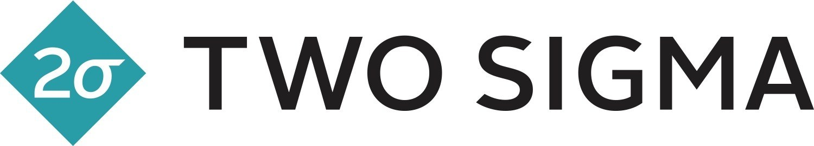
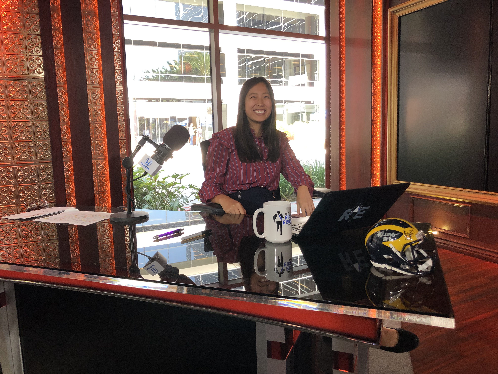
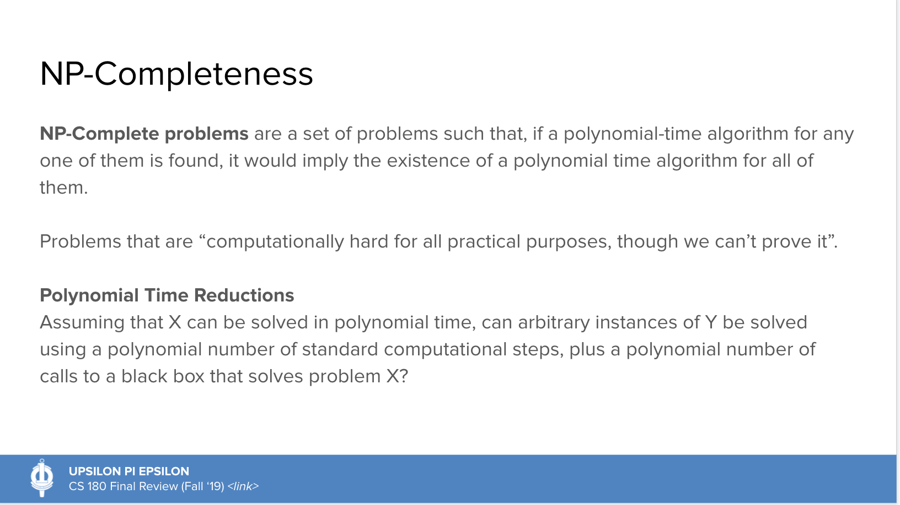
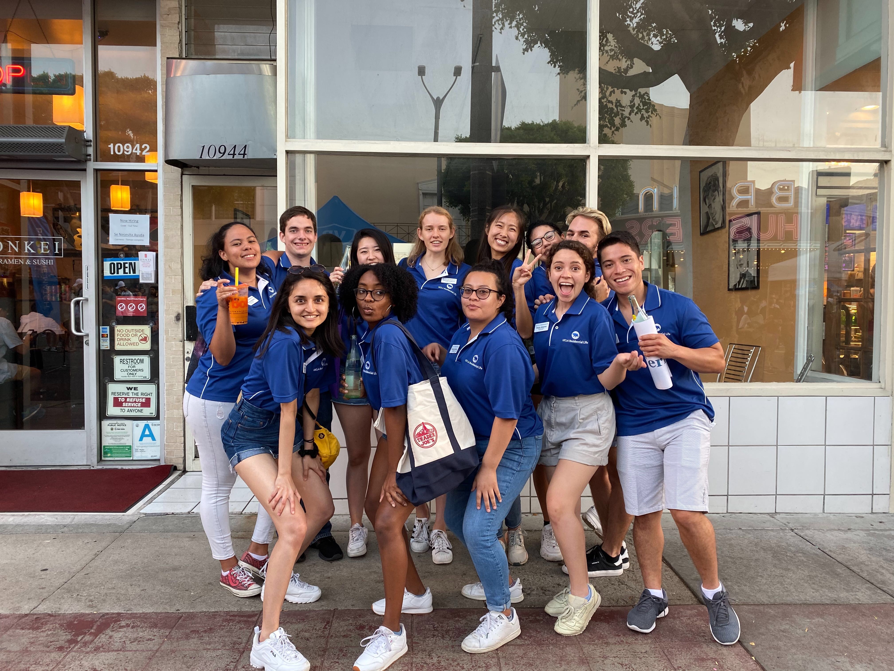
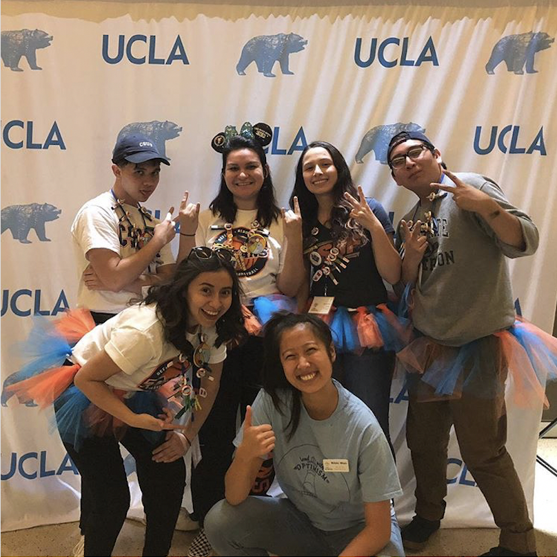
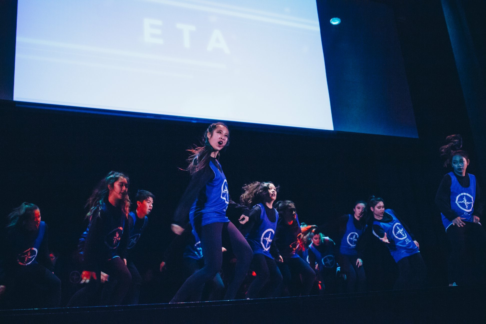

Greetings! I'm a fourth year Computer Science and Engineering major at UCLA
interested in machine learning and data science, though I'm still exploring to
find out what I like. I'm passionate, hard-working, and always looking to learn and improve.
I am most familiar with Python and C/C++ and have experience with SQL,
MATLAB, OCaml, HTML/CSS, and Javascript.
Click the button below for my resume or keep
scrolling for an overview of my work!
 June 2020 - September 2020
June 2020 - September 2020
remote internship
at Two Sigma

I interned at Two Sigma on the Data Quality Team where I developed a product to
detect and vet changes to old data, which previously were not checked,
in order to prevent inaccurate data being reported
to modelers. I communicated with data analysts to develop my product and factored in
input from a variety of involved parties to determine the most beneficial end state.
I used Python's SQLAlchemy library to interface with the data,
Jinja to generate daily and weekly reports of the changes to data, and pandas to
create plots to better visualize the sources of the changes.
June 2019 - September 2019
internship
at AT&T

As a software engineering intern under the AT&T Entertainment group, I worked to
create an application that completely automated the brownout testing of
residential gateways. This application interfaced with various hardware devices
to vary the power supply given to the residential gateway and featured an interactive GUI that
had realtime progress reports on the test itself as well as a field for the
test to be more configurable according to testing specifications. I was also able
to create a similar program for the brownout testing of a remote.
January 2019 - June 2019
the plane
ride
I worked as a fellow of the UCLA Game Lab,
to develop a 2D pixel survival game known as "fly the friendly sky"- inspired by the
long, uncomfortable experience of a long plane ride. I coded in C# using the Unity software
and bounced game mechanic ideas off of my partner and game artist. You can see more details
here and view the video
interview on the making of my game here.
March 2019
Binary
Blaster
As a final project for UCLA's CS M152A Introductory Digital Design Laboratory,
I and two others created a game known as "Binary Blaster" using Verilog, a computer monitor,
and a Nexys 3 FPGA board. In the game, players must configure the eight switches on the
FPGA board to match the random eight bit binary number on the screen, which switches every five
seconds. The game also features a score tracker on a seven segment display as well as a submit
and reset button.
As part of a 24 hours hackathon hosted by UCLA ACM, I worked in a team of four to create Asepsis,
a site that informed people of the air quality levels at the various UC campuses. I contributed to the front end
development of this site using HTML and CSS. This site was made in
observance of the fires that had been ravaging California.
June - August 2018
Research Under
ARNI Lab

In the ARNI (Algorithmic Research in Network Information flow) Lab under Professor Christina Fragouli,
I studied the secure capacity of a specific type of wireless network called a 1-2-1 network. I was able
to use MATLAB to simulate different schemes in choosing communication paths and how these schemes affected
the capacity. I was able to present my research at the Annual NSF REU Meeting of the Minds and at the
Summer Undergraduate Scholars Program Poster Symposium, where I and my research partner won
"Best Group Poster". (pictured above)
March - June 2018
Line Guided
Arduino Car

Within our Introduction to Electrical Engineering (ECE3) class, I and a partner breadboarded
and coded an Arduino car capable of sensing and following a black line on the white floor.
The car used an IR transmitter and reciever system that conveyed readings to the Arduino which
in turn instructed the motors to run a certain speed to ensure the car stayed on the line.
March - June 2018
Maze-Solving
Aruduino Car
For UCLA IEEE's Open Project Space, I worked with two others to breadboard, solder,
and code a car capable of solving a maze. This car again utilized an IR transmitter
and reciever system as well as an H bridge to navigate walls of a maze- turning and
going straight when appropriate.
Through my Data Structures and Algorithms class, I coded a version of Tetris in C++ that
involved the same pieces as the original game as well as a few additional ones that affected pieces on the entire board.
Through coding this, I utilized my knowledge of data structures, inheritance, and recursion.
September 2019 - Present
Upsilon Pi Epsilon
Tutoring Chair

I serve as a Tutoring Chair for UCLA UPE, which is our school's
computer science honor society. In this role, I host review sessions
and project hack workshops for various UCLA computer science classes.
I also guide individuals in one-on-one tutoring.
September 2018 - March 2020
Resident Assistant

As a Resident Assistant, my job is to facilitate social interactions and ensure the
mental and physical well-being of my residents. In this role, I have gained
experience interacting
with many different types of people of different backgrounds and experiences in both a
professional and casual context.
In this role, I've learned a lot about how to stand up for myself and for others, how
to make others feel happy and comfortable, and how to memorize the names of many people
in a very short amount of time.
May 2018 - May 2020
Regents Scholar Society
Executive Board
From May 2018 to May 2019, I served as the Activities Director and
helped to plan and organize various social events for the
Regents Scholar Society at UCLA. From May 2019 to May 2020, I've served as the
Publicity Director and have helped to publicize and create promotional
graphics for various Society events.

As Spirit Chair for the PACURH (Pacific Affiliate of College and University Residence Halls)
2018 Regional Leadership Conference, I organized the spirit point system and kept track of
over 40 school delegations. In addition, I worked with the other 12 conference chairs to
organize various aspects of the overall conference.
Just For Fun
Outside of all this, I enjoy dancing, designing, and baking-
amongst other things.
